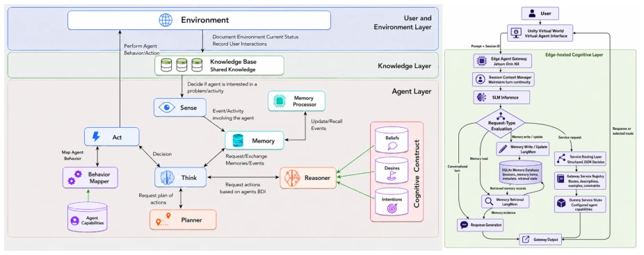
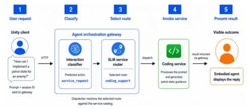

This paper equips virtual agents with an "edge brain," attempting to implement the Think and Memory components of the CEAA architecture by running small models (SLMs) on Jetson devices. The concept is highly appealing, given that the metaverse requires low latency, but the term "embodied" is somewhat misleading, as there are no real robots, only backend logic for the virtual world. The 0.5B model is too weak, the 3.0B model is too laggy, and the 1.5B is barely passable. The authors are honest, not boasting of a perfect solution, only demonstrating feasibility. The criticism lies in the evaluation being too simple, not testing real 3D interaction, only routing and memory. However, for resource-constrained edge devices, this is indeed a feasible starting point, at least proving small models can function, though the trade-off between latency and accuracy remains harsh, and future solutions will still rely on hybrid architectures.
Virtual agents in the metaverse require persistence and adaptability, but existing implementations mostly rely on scripts or rules, lacking cognitive capabilities [5]. Although Large Language Models (LLMs) enhance intelligence, cloud inference latency is high, making them unsuitable for real-time interaction [12]. Edge computing can reduce latency, but resources are limited. The CEAA architecture provides a cognitive component framework [6], but lacks practical validation on edge devices. Memory mechanisms are prone to failure in long conversations, with limitations in temporal reasoning and causal consistency [13]. The authors aim to explore whether SLMs can effectively implement the Think and Memory processes of CEAA on the edge, resolving contradictions between real-time performance, privacy, and computational resources, providing localized cognitive support for immersive experiences.
The system is based on the CEAA architecture and builds an edge virtual agent gateway. Data flow initiates HTTP requests from the Unity virtual world client, containing user prompts and session IDs. Requests arrive at the NVIDIA Jetson Orin NX edge server, processed by Qwen2.5 models (0.5B/1.5B/3.0B). The Think process is implemented via service routing, where the model classifies intents (dialogue, memory read/write, service requests) and outputs JSON routing decisions. The Memory process combines SQLite and LangMem to extract persistent facts. The system is divided into routing evaluation and memory evaluation, the former testing the accuracy of 10 service routes, the latter testing the read/write accuracy of 250 prompt pairs. All models use GGUF quantization, context 4096 tokens, served via llama.cpp. The memory subsystem records all sessions, LangMem extracts facts stored as content-keyed entries, duplicates are updated, new records retained.

Figure 1: High-level overview of the CEAA architecture (left) and the edge-hosted agent implementation (right).

Figure 2: Illustrative gateway flow from user request to coding- service response presented by the embodied agent.
Experiments were conducted on the InterwovenXR testbed. Routing tests used 1000 balanced prompts, covering 10 services (e.g., 3D generation, game AI). Memory tests used 250 prompt pairs (125 write + 125 read). Metrics include accuracy, macro-averaged F1, and latency. Results show the 0.5B model routing accuracy was only 29.4%, unusable; 1.5B reached 85.4% accuracy with 3.3s latency; 3.0B accuracy 87.7%, but latency spiked to 5s. Regarding memory, 3.0B accuracy 93.6%, but latency near 10s. It was found that model size is positively correlated with accuracy and negatively correlated with latency, with 1.5B being the cost-effective choice. 0.5B performed poorly in correction handling, 3.0B is accurate but too slow. 0.5B often misclassifies prompts as image-to-3D generation.